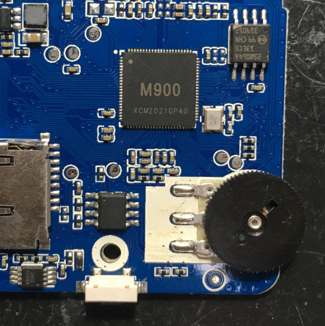
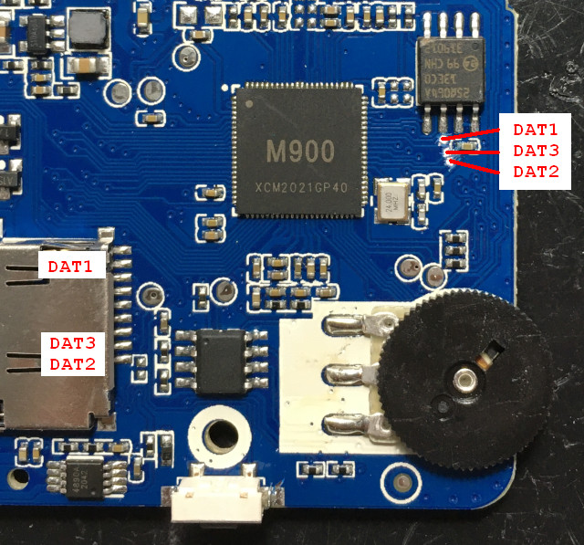
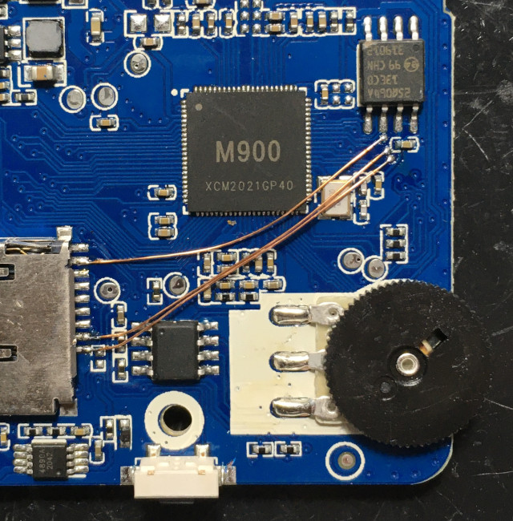
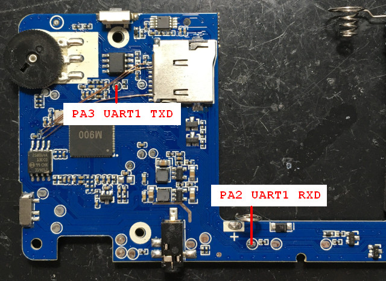
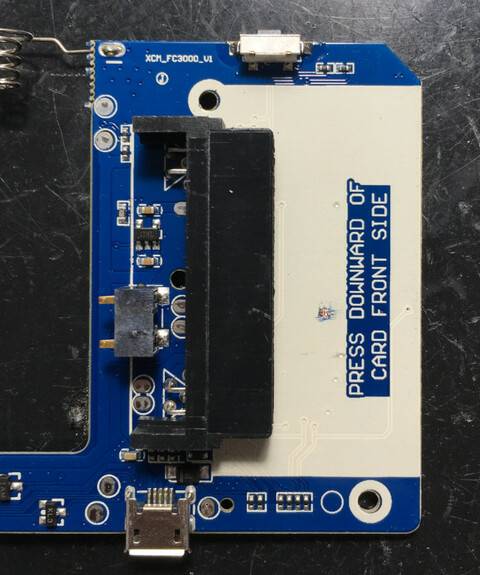
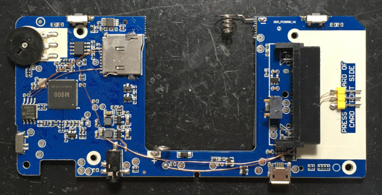
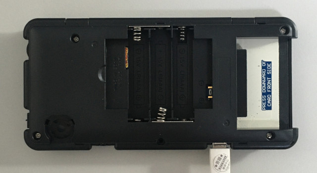
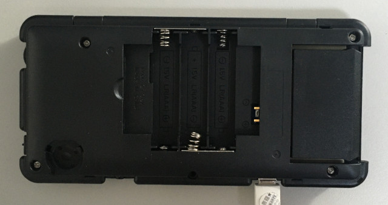
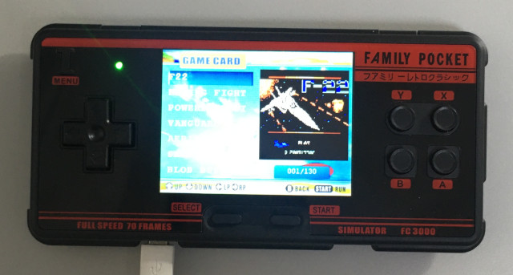

FC3000 >> Assembly
開發環境
司徒使用GNU GCC編譯環境，安裝方式如下：
$ sudo apt-get install gcc-arm-none-eabi-*
燒錄軟體則是sunxi-tools
$ cd $ wget https://github.com/steward-fu/lichee-nano/releases/download/v1.0/sunxi-tools.7z $ 7zr x sunxi-tools.7z $ cd sunxi-tools $ make clean $ make
由於Allwinner韌體有Checksum檢查欄位，因此，需要編譯mksunxi工具，該工具可以針對韌體計算更新Checksum欄位
$ cd $ wget https://github.com/steward-fu/lichee-nano/releases/download/v1.0/mksunxi.c $ gcc mksunxi.c -o mksunxi
接著需要改機，否則無法從MicroSD開機

需要跳三根線

這樣就可以從MicroSD開機

如果沒有要開發FC3000程式，可以跳過這個步驟，開發者可以把UART1拉出來，腳位如下

把排針擺放到卡帶位置

跳線完成

不要插入卡帶

下載測試程式，直接DD到MicroSD即可，插入MicroSD卡後，開機上電

使用原本官方MicroSD開機，則可以進入原本系統

插入卡帶

則開機進入NES遊戲畫面，做到這一步，FC3000掌機已經具備跑Linux系統的能力，因此，如果一般玩家想要讓FC3000掌機可以具備跑Linux的能力，只要跳三根線即可
